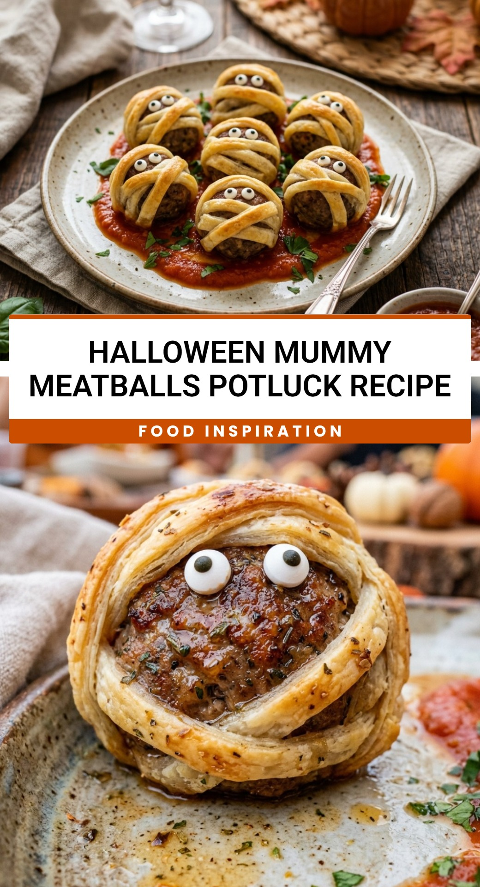

Halloween Mummy Meatballs Potluck Recipe
October 1, 2026

When October rolls around, everyone starts looking for that perfect dish to bring to the neighborhood Halloween party. These Halloween Mummy Meatballs are always the star of the show. They are incredibly easy to put together, but they look like you spent hours on them. Kids find them hilarious, and adults love that they are a savory break from all the sugary candy floating around during the season.
Recipe Information
Prep Time: 15 minutes
Cook Time: 15 minutes
Total Time: 30 minutes
Servings: 24 meatballs
Difficulty Level: Easy
Nutrition Information
Calories per serving: 115 kcal
Protein: 6g
Carbohydrates: 9g
Fat: 7g
Fiber: 0g
Sugar: 2g
Sodium: 280mg